Ingrese en SYSFUM -> Certificados y seleccione la oblea deseada
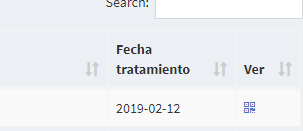
Una vez abierta seleccione Imprimir del menú contextual (Clic derecho) o bien utilice la combinación de teclas CTRL + P
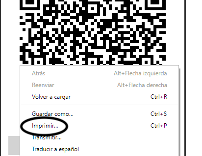
En el cuadro de dialogo de impresión identifique la sección de selección de impresora y oprima cambiar
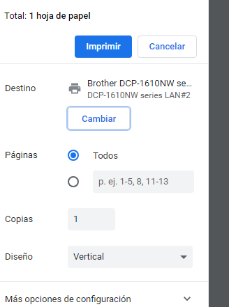
Seleccione Guardar como PDF
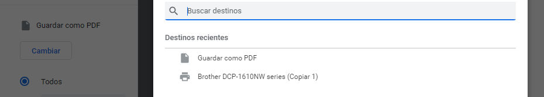
Finalmente guarde el archivo en la ubicación deseada de su computadora pulsando Guardar
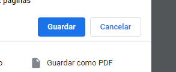
Membrete en formato PDF, en caso de tenerlo en formato .doc (Microsoft Word), consulte el siguiente enlace
Adobe Acrobat 9 o superior.
Abra la oblea guardada en el paso anterior
En la barra de opciones superior seleccione Documento -> Marca de agua -> agregar
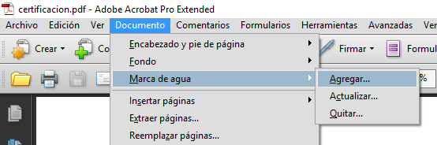
Deberá observar el siguiente cuadro de dialogo
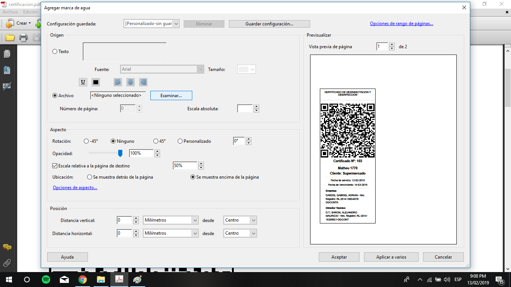
En la sección Origen seleccione la opción archivo y pulse examinar. En este punto deberá seleccionar el archivo del membrete ya en formato PDF
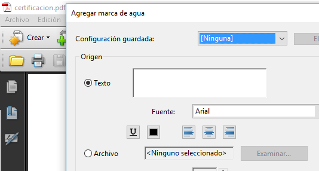
Adicionalmente puede controlar la escala entre otros parámetros en la sección Aspecto
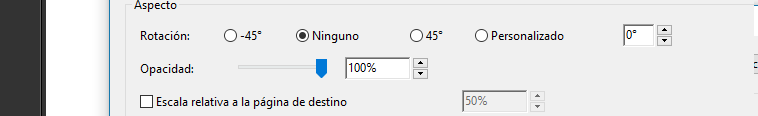
Finalmente obtendrá una vista previa del membrete y se insertara en documento al pulsar en Aceptar
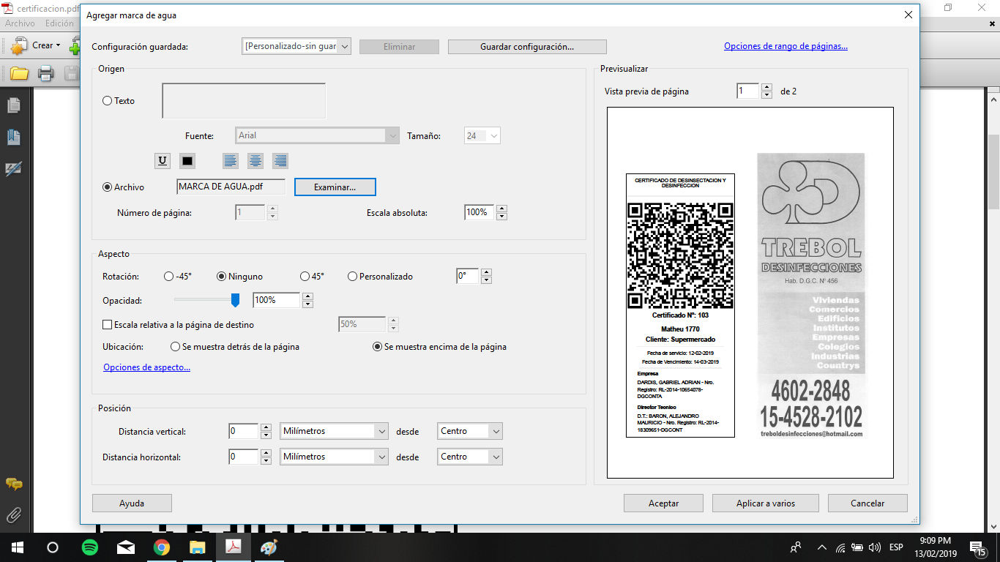
Guarde el PDF ya terminado listo para su envió / impresión pulsando el icono de guardado
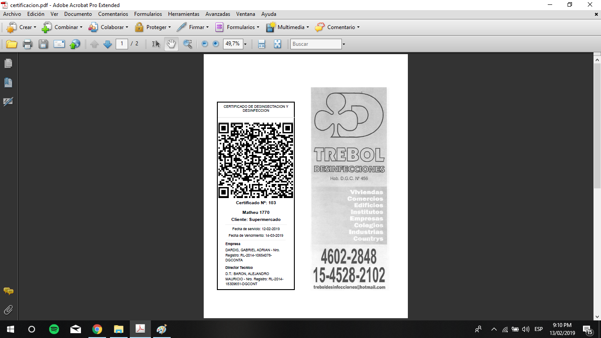